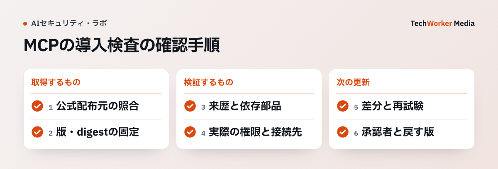

Registryに載っているMCPサーバーは、そのまま導入してよいですか？
導入してよい根拠にはなりません。配布元、成果物、来歴、権限、更新を別々に確認します。
MCPサーバーを導入すると、AIエージェントが新しい経路で触れられるものが増えます。ローカルファイル、SaaS、社内APIなどです。便利さの反面、導入するのは一つの「ツール」ではありません。
配布元のアカウント、パッケージ、依存関係、ビルド成果物、実行権限、将来の更新を含む供給経路を受け入れます。
次の事情だけでは、社内で実行してよい根拠になりません。Registryに名前がある、GitHubの星が多い、READMEが分かりやすい、といった事情です。
結論は、配布元、固定した成果物、来歴、実行権限、更新を別々に確認することです。一つのセキュリティ製品やチェックリストに委ねず、どの検査で何を否定できるかを明確にします。
MCP Registryは発見の入口として使えます。個別組織のリスク承認を代行する仕組みではありません。
導入前に、どんな順番で確認しますか？
配布元、固定した成果物、SBOMと来歴、実行権限の順に確認し、更新の承認者も決めます。

導入票は「公式配布元／取得先／固定版／許す操作／更新担当」から始めます。社内ナレッジ検索なら、隔離テナントで返せる文書と呼べるtoolを確かめ、本番へ同じ版を昇格します。試験の合格を次の版へ自動的に引き継ぎません。
- 配布元を所有の連鎖で確認します。次の4つが同じ責任主体を指すかを照合します。Registryのnamespace、パッケージレジストリのpublisher、ソースリポジトリ、組織の公式サイトです。表示名が似ていても、別のアカウントの場合があります。導入申請には、保守者、公式の配布アカウント、連絡先、脆弱性報告窓口を記録します。確認できるのは、意図した提供者から取ろうとしているかです。コードの安全性や将来の運用は、証明しません。
- 導入対象を固定した成果物にします。
latestや浮動ブランチを本番の導入指定に使うと、同じ設定から別のコードが入る余地を残します。パッケージのversion、コンテナならdigest、ソースならコミット識別子を記録します。導入時に照合できるようにします。固定の目的は、承認した更新だけを進めることです。 - SBOMと来歴で依存関係の盲点を減らします。SBOM（ソフトウェア部品表）は、何が含まれるかを共有する材料です。provenance（来歴）は、どのソースからどの工程を経て成果物になったかを確かめる材料です。二つがあっても脆弱性がないとはいえません。ただし、インシデント時に影響範囲を調べる速度は上がります。導入票には、固定版、取得先、SBOM・来歴の有無、主要依存、更新担当を残します。情報が不足する場合は、権限を狭めた検証用途に限定します。導入理由の再評価も行います。
- 実行権限をエージェントの権限と分けます。MCPサーバーに渡す認証情報の権限は、担当する操作に必要な範囲へ絞ります。読み取り検索だけなら、書き込みトークンを渡しません。テスト用の隔離テナントを使います。外部URLへの接続、ローカルファイル、シェル実行は、影響範囲が違います。一つの「許可」にまとめません。実装を読まずに権限を広く与えるなら、sandbox（隔離環境）で挙動を観測してからにします。
- 更新も新規導入と同じ扱いにします。自動更新の前に、誰が差分を確認するかを決めます。問題時にどの版へ戻すかも決めます。
たとえば社内ナレッジ検索用のMCPサーバーを追加する場合は、検証環境で固定した版を試します。確認するのは、接続先URL、呼び出せるツール、返せるデータ、失敗時の挙動です。本番へは同じ版だけを昇格します。版が変わったら、再度この検査を通します。
SLSAは、ビルド来歴を検証可能にする考え方を示しています。NIST SSDFは、安全なソフトウェア開発の実践を整理しています。どちらも「安全なコード」というラベルを発行するものではありません。確認可能性を高める枠組みです。
MCPサーバーの導入がうまくいかない例や限界には、どんなものがありますか？
表示名だけで信用する、latestで導入する、署名やSBOMを安全の証明と考える、の3つが典型です。
- 表示名だけで配布元を信用する。URLを一つだけ貼る申請では、誰が保守者か分かりません。所有の連鎖を照合します。
- latestや浮動ブランチで導入する。同じ設定から、別のコードが入る余地が残ります。
- 署名やSBOMで利用目的まで安全と考える。署名・digest・SBOM・来歴は、供給経路の検証材料です。プロンプト経由の誤操作、過剰な権限、誤った接続先、業務ルール違反は防ぎません。
- どの組織にも同じ評価を当てはめる。パッケージの信頼性評価は、導入組織のデータ分類、契約、アクセス制御によって変わります。
高リスクの書き込み操作や、秘密情報を扱う接続には、人の承認と業務レビューを残してください。サプライチェーン確認とは別に行います。
導入前の検査点は、何を記録し、どこに限界がありますか？
配布元、成果物、来歴・SBOM、実行権限、更新の5つについて、記録するものと限界を表にしました。
| 検査点 | 導入前に記録するもの | 見落としやすい限界 |
|---|---|---|
| 配布元 | namespace、publisher、公式リポジトリ | なりすましや保守者変更を完全には防げない |
| 成果物 | version、digest、コミットID | 固定しても既知の欠陥は残り得る |
| 来歴・SBOM | ビルド由来、部品一覧、取得日時 | 網羅性・正確性は別途確認が要る |
| 実行権限 | 読取・書込、ネットワーク、秘密情報 | ツール説明だけでは実アクセスを示さない |
| 更新 | 差分、再試験、承認者、ロールバック | 自動更新は承認済み差分を越え得る |
よくある質問
それだけでは根拠になりません。MCP Registryは発見の入口として使えます。ただし、個別組織のリスク承認は代行しません。配布元、固定した成果物、来歴、実行権限、更新を別々に確認します。どの検査で何を否定できるかを明確にします。
latestや浮動ブランチを使いません。パッケージのversion、コンテナならdigest、ソースならコミット識別子を記録して照合します。固定の目的は、更新を止めることではありません。何が変わったかを比較し、承認した更新だけを進めることです。
いえません。署名、digest、SBOM、来歴は、供給経路の検証材料です。プロンプト経由の誤操作、過剰な権限、誤った接続先、業務ルール違反は防ぎません。高リスクの書込みや秘密情報の接続には、人の承認と業務レビューを残します。
次の一歩は何から始めればよいですか？
導入候補の配布元と固定版を記録し、権限を絞った検証環境で試すことから始めます。更新の担当も決めます。
- 導入候補の保守者、公式の配布アカウント、連絡先を記録します。
- versionまたはdigestを固定し、検証環境で権限を狭めて試します。
- 更新の承認者とロールバックの手順を決めます。
導入候補の配布元・権限・更新経路を確認したい場合は、MCP・AIエージェントのセキュリティレビューをご利用ください。
出典（一次情報と確認範囲）
確認日：2026年9月4日。製品仕様・制度は更新されるため、導入時はリンク先の最新版を再確認してください。本文は技術的な設計例です。国内法や契約上の義務は、導入先の条件に応じて確認してください。